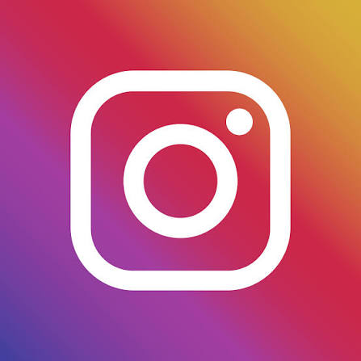
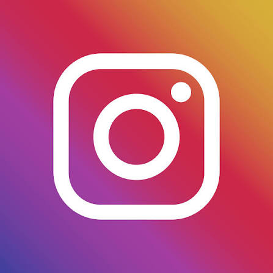

شركة شيبسي (Chipsy) هي علامة تجارية مصرية رائدة في صناعة الوجبات الخفيفة، خاصة رقائق البطاطس والمقرمشات، وهي جزء من شركة بيبسيكو العالمية، وتنتج مجموعة متنوعة من النكهات والأحجام، مع التزام بالجودة وتوظيف آلاف العمال في مصانعها المنتشرة بمصر لدعم المزارعين المحليين والمستهلكين على حد سواء.
معلومات أساسية:
الشركة الأم: بيبسيكو (PepsiCo).
التأسيس: شيبسي في مصر بدأت عملياتها منذ فترة، واستحوذت عليها بيبسيكو في عام 2001.
المنتجات: رقائق البطاطس (شيبس)، مقرمشات، منتجات الذرة، مع نكهات متنوعة مثل الجبن، الطماطم، والباربيكيو.
الانتشار والعمليات في مصر:
المصانع: تمتلك شيبسي 9 مصانع في مصر (في 6 أكتوبر، العبور، وغيرها).
التوزيع: لديها أسطول توزيع كبير يضم 4600 سيارة، وتتعامل مع آلاف الموردين.
دعم المزارعين: تتعاون مع مزارعي البطاطس المحليين (خاصة في المنيا والمنوفية وبني سويف) لضمان 100% من البطاطس محلية الصنع.
العلامات التجارية المشابهة/ذات الصلة:
لي (Lay's): علامة عالمية أخرى مملوكة لبيبسيكو وتُباع في مصر.
دوريتوس (Doritos): منتجات ذرة تابعة لبيبسيكو، ولكن قد تختلف في حملات المقاطعة.
باختصار، شيبسي هي شركة وجبات خفيفة عملاقة في السوق المصري، جزء من منظومة بيبسيكو، تركز على المنتج المحلي وتوفر مجموعة واسعة من النكهات التي يحبها المستهلكون.
 
